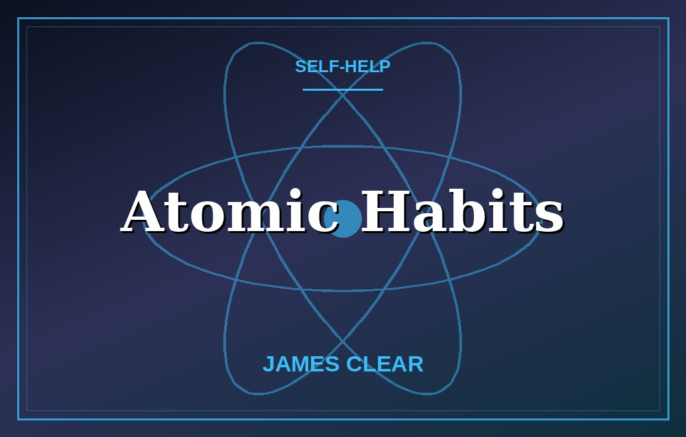

Wings of Fire
An inspirational autobiography chronicling the early life and hardships of Dr. Kalam. It details his inspiring journey from Rameswaram to leading India's space and missile programs. The book encourages readers to dream big and overcome hurdles with hard work.

The Alchemist
A philosophical tale following Santiago, a young shepherd on a quest to find hidden treasure at the pyramids. Through desert trials, he learns to listen to his heart and recognize omens. It inspires readers to listen to their calling and fulfill their destiny.

Atomic Habits
A practical guide explaining how tiny daily changes compound into remarkable long-term personal success. It provides an actionable four-step framework to build good routines and break negative habits. The book emphasizes building better systems rather than depending on willpower alone.